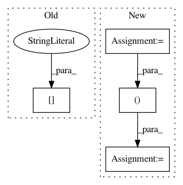

20fe7b4cbf62f6223241d6cafc6e8ea48701efdd,softlearning/value_functions/utils.py,,get_V_function_from_variant,#Any#Any#,81
Before Change
V_params = variant["V_params"].copy()
kwargs = V_params.get("kwargs", {})
V_function = V_FUNCTION_FUNCTIONS[
V_params["type"]](
env.active_observation_shape,
**kwargs)
return V_function
After Change
def get_V_function_from_variant(variant, env):
V_params = variant["V_params"].copy()
observation_shape = env.active_observation_shape
input_shapes = (observation_shape, )
return get_value_function_from_params(V_params, input_shapes)
In pattern: SUPERPATTERN
Frequency: 3
Non-data size: 4
Instances
Project Name: rail-berkeley/softlearning
Commit Name: 20fe7b4cbf62f6223241d6cafc6e8ea48701efdd
Time: 2018-10-22
Author: hartikainen@berkeley.edu
File Name: softlearning/value_functions/utils.py
Class Name:
Method Name: get_V_function_from_variant
Project Name: shijieS/SST
Commit Name: d59cd8d19919427a12d38f968a1d240e4c62bed1
Time: 2018-09-05
Author: shijieSun@chd.edu.cn
File Name: utils/operation.py
Class Name:
Method Name: show_batch_circle_image
Project Name: rail-berkeley/softlearning
Commit Name: 20fe7b4cbf62f6223241d6cafc6e8ea48701efdd
Time: 2018-10-22
Author: hartikainen@berkeley.edu
File Name: softlearning/value_functions/utils.py
Class Name:
Method Name: get_Q_function_from_variant